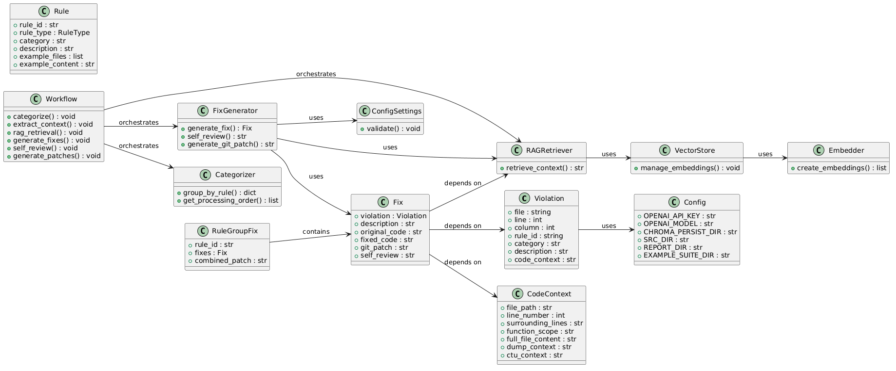

🎯 1 · Problem Statement
MISRA-C:2012 compliance is critical for safety-critical embedded systems, yet manual fixing is slow, error-prone, and expensive
The Core Challenge
Safety-critical industries (automotive, aerospace, medical devices) must comply with MISRA-C:2012 coding standards. However, manual violation fixing is time-consuming, inconsistent, and costly. Static analysis tools like cppcheck generate hundreds of violations per codebase, each requiring deep understanding of MISRA rules, context analysis, and careful code modification without introducing regressions.
⏱️ Time & Effort
Each violation takes 15-30 minutes for manual analysis and fixing. A typical codebase with 500+ violations requires 200+ engineer hours.
🎯 Accuracy & Consistency
Manual fixes vary by engineer expertise. Inconsistent interpretations of MISRA rules lead to different fix approaches for similar violations.
🔄 Regression Risk
Manual code modifications without comprehensive testing introduce regression bugs. No automated validation of fixes against MISRA rules.
📚 Knowledge Barrier
MISRA-C:2012 has 143 rules + 16 directives. Engineers need deep domain knowledge. Junior engineers struggle with complex rules like 10.x (essential types), 11.x (pointers), 17.x (pointers/arrays).
Opportunity
AI + RAG + Static Analysis can automate the full pipeline: detect violations → enrich with context (AST, types, cross-file symbols) → retrieve relevant MISRA examples → generate fixes with LLM → self-review → produce validated git patches. This reduces effort by 60-80% while improving consistency and traceability.
💡 2 · Solution Overview
MISRA-C:2012 AI Assistant — End-to-end automated violation fixing with RAG-enhanced LLM
High-Level Architecture
The solution combines static analysis (cppcheck), vector-based RAG (ChromaDB), LLM-powered fix generation (OpenAI GPT-4o), and agentic workflow orchestration (LangGraph) into a unified pipeline that produces validated git patches for MISRA violations.
🔄 End-to-End Pipeline
C Source Files
src/
→
Static Analysis
cppcheck + misra.py
→
Violations CSV
report/
→
Context Enrichment
AST + CTU + Function Scope
→
RAG Retrieval
ChromaDB + MISRA Examples
→
LLM Fix Generation
GPT-4o + LangGraph
→
Self-Review + Patches
Validated Git Diffs
🔑 Key Capabilities
- Automated Static Analysis: cppcheck --dump generates .dump (AST) and .ctu-info (cross-file symbols)
- Rich Context Extraction: Function scope, surrounding lines, typedefs, macros, variables with resolved types, cross-file symbols
- MISRA Rule RAG: ChromaDB stores Example Suite (R_*.c, D_*.c) with embeddings for semantic retrieval
- Agentic Workflow: LangGraph orchestrates 6-step pipeline: Categorize → Context → RAG → Generate → Review → Patch
- Self-Review Loop: LLM validates its own fixes (approved/issues/summary schema)
- Git Patch Output: Unified diffs grouped by rule, ready for
patch -p0orgit apply
📦 Tech Stack
| Category | Technology |
|---|---|
| LLM | OpenAI model (ex: GPT-4o-mini) |
| Orchestration | LangChain + LangGraph |
| Embeddings | OpenAI embedding model (ex: text-embedding-3-small) |
| Vector DB | ChromaDB (local, persistent, cosine similarity) |
| Static Analysis | cppcheck + addon misra.py |
| UI | Streamlit (workflow, RAG explorer, source browser) |
| Testing | pytest (multiple tests) |
🏗️ 3 · Architecture & Code Design
Detailed component architecture, data flow, and key implementation decisions
🔄 Data Flow — 4 Phases
┌────────────────────────────────────────────────────────────────────────────────────────────────────────┐
│ │
│ Phase 1: Static Analysis │
│ ┌──────────────────────────────────────────────────────────────────────────────────────────────────┐ │
│ │ │ │
│ │ src/example.c ──► cppcheck --dump ──► src/example.c.dump (XML: AST, types, symbols, CFG) │ │
│ │ └──► src/example.c.ctu-info (JSON: cross-file symbols) │ │
│ │ │ │
│ │ src/example.c.dump + misrac-2012.txt ──► python misra.py ──► report/example.c.csv │ │
│ │ │ │
│ └──────────────────────────────────────────────────────────────────────────────────────────────────┘ │
│ │
│ Phase 2: Violation Ingestion │
│ ┌──────────────────────────────────────────────────────────────────────────────────────────────────┐ │
│ │ │ │
│ │ report/*.csv ──► csv_loader.load_all_reports() ──► List[Violation] │ │
│ │ │ │
│ └──────────────────────────────────────────────────────────────────────────────────────────────────┘ │
│ │
│ Phase 3: Context Enrichment │
│ ┌──────────────────────────────────────────────────────────────────────────────────────────────────┐ │
│ │ │ │
│ │ For each Violation: │ │
│ │ │ │
│ │ ┌─────────────────────┐ ┌──────────────────────┐ ┌─────────────────────┐ │ │
│ │ │ CodeContextExtractor│ │ DumpParser │ │ RAGRetriever │ │ │
│ │ │ │ │ │ │ │ │ │
│ │ │ Reads src/example.c │ │ Parses .dump XML: │ │ Queries ChromaDB: │ │ │
│ │ │ │ │ - typedefs │ │ - Similar rule │ │ │
│ │ │ - surrounding lines │ │ - macros │ │ examples │ │ │
│ │ │ - function scope │ │ - variables + types │ │ - Example code │ │ │
│ │ │ │ │ - functions + types │ │ │ │ │
│ │ │ │ │ - token type info │ │ │ │ │
│ │ │ │ │ │ │ │ │ │
│ │ │ │ │ Parses .ctu-info: │ │ │ │ │
│ │ │ │ │ - exported typedefs │ │ │ │ │
│ │ │ │ │ - external IDs │ │ │ │ │
│ │ │ │ │ - internal IDs │ │ │ │ │
│ │ │ │ │ - symbol usage │ │ │ │ │
│ │ └────────┬────────────┘ └──────────┬───────────┘ └────────┬────────────┘ │ │
│ │ │ │ │ │ │
│ │ └────────────┬───────────────┴─────────────────────────┘ │ │
│ │ ▼ │ │
│ │ CodeContext object: │ │
│ │ - surrounding_lines │ │
│ │ - function_scope │ │
│ │ - dump_context (formatted string) │ │
│ │ - ctu_context (formatted string) │ │
│ │ │ │
│ └──────────────────────────────────────────────────────────────────────────────────────────────────┘ │
│ │
│ Phase 4: Fix Generation │
│ ┌──────────────────────────────────────────────────────────────────────────────────────────────────┐ │
│ │ │ │
│ │ LLM Prompt includes: │ │
│ │ ┌──────────────────────────────────────────────────────────────────────────────────────────┐ │ │
│ │ │ Rule: 10.4, Category: Mandatory │ │ │
│ │ │ │ │ │
│ │ │ --- Code Context --- │ │ │
│ │ │ >>> 42: result = (uint16)(N - 1) + idx; │ │ │
│ │ │ │ │ │
│ │ │ --- Static Analysis Context --- │ │ │
│ │ │ Platform: char_bit=8, int_bit=32, pointer_bit=64 │ │ │
│ │ │ Variables: uint16 idx (line 23), sint16 currentTemp (line 21) │ │ │
│ │ │ Type Info Near Line 42: ... │ │ │
│ │ │ │ │ │
│ │ │ --- Cross-Translation-Unit Info --- │ │ │
│ │ │ External Identifiers: TableData, main │ │ │
│ │ │ │ │ │
│ │ │ --- Relevant MISRA Rule Context --- │ │ │
│ │ │ Rule 10.4 examples from Example Suite... │ │ │
│ │ └──────────────────────────────────────────────────────────────────────────────────────────┘ │ │
│ │ │ │
│ │ LLM ──► Fix(description, original_code, fixed_code) ──► Self-Review ──► Git Patch │ │
│ │ │ │
│ └──────────────────────────────────────────────────────────────────────────────────────────────────┘ │
│ │
│ Output: patches/rule_X.Y.patch + results.json │
│ │
└────────────────────────────────────────────────────────────────────────────────────────────────────────┘
⚙️ Key Implementation Details
LangGraph Workflow (workflow.py)
- Categorize: Group by rule_id, sort by priority (Mandatory=1, Required=2, Advisory=3)
- Extract Context: Read src/, ±10 lines, function scope, DumpParser + CTU
- RAG Retrieval: Query ChromaDB with "{rule_id}: {description}", top_k=5
- Generate Fixes: LLM call with temperature=0.1, JSON response format
- Self-Review: LLM validates fix (approved/issues/summary)
- Generate Patches: difflib.unified_diff per fix, grouped by rule
ChromaDB Vector Store
- PersistentClient with
anonymized_telemetry=False - Collection:
misra_c_2012_rules - Cosine similarity (hnsw:space=cosine)
- Document format:
"Rule {id}: {desc}\n\nCategory: {cat}\n\nExample code:\n{examples}" - Batch embedding: 100 docs/request (rate limit handling)
- Query:
"{rule_id}: {description}"with optional rule_id filter
DumpParser (.dump + .ctu-info)
- .dump XML → platform types, typedefs, macros, variables+resolved types, functions+return types, per-line token info
- .ctu-info JSON → exported typedefs, struct/union tags, macros, external/internal/local IDs, symbol usage
- Auto-locates files: same dir, workspace root, src/
- Formatted strings for LLM consumption
Prompt Engineering (prompts.py)
- FIX_GENERATION_SYSTEM_PROMPT: JSON response format with description, original_code, fixed_code
- FIX_GENERATION_USER_PROMPT_TEMPLATE: Rule, code context, static analysis, RAG examples
- SELF_REVIEW_SYSTEM_PROMPT: Output: approved (bool), issues (list), summary (str)
- Temperature: 0.1 (deterministic)
- Response format:
{"type": "json_object"}
🚀 4 · Steps to Deploy the Application
Complete setup guide from environment preparation to running the pipeline
📋 Prerequisites
- Python 3.10+
- cppcheck (installed and in PATH)
- OpenAI API key (GPT-4o access)
- Git (for patch application)
- Linux/macOS/WSL2 recommended
🔧 Step-by-Step Deployment
1. Clone & Environment Setup
# Clone repository git clone repository-url cd misrac-checker # Create virtual environment python3 -m venv venv source venv/bin/activate # Install dependencies pip install -r requirements.txt # Key packages: langchain, langgraph, openai, chromadb, streamlit, pytest
2. Configure Environment
# Copy example env file
cp .env.example .env
# Edit .env and add your OpenAI API key. Required:
OPENAI_LLM_API_KEY=sk-xxxxxxxxxxxxxxxxxxxxxxxx
OPENAI_LLM_API_ENDPOINT=https://your-llm-api-endpoint
OPENAI_EMBEDDING_API_KEY=sk-xxxxxxxxxxxxxxxxxxxxxxxx
OPENAI_EMBEDDING_ENDPOINT=https://your-embedding-api-endpoint
3. Initialize Vector Database
# Parse Example Suite, create embeddings, populate ChromaDB
python -m backend.cli init
# Expected output:
# === Initializing RAG Vector Store ===
# Parsing Example Suite from ./Example-Suite-master...
# Found 159 rules/directives
# Creating embeddings...
# === Initialization Complete ===
# 159 rules embedded in vector store
4. Place Source Files & Run Analysis
# Run static analysis to generate violation reports python main.py src/example.c # Or analyze all files: for f in src/*.c; do python main.py "$f"; done # Check generated reports ls report/
5. Generate Fixes (Full Pipeline)
# Run full AI pipeline: violations → context → RAG → LLM fixes → self-review → patches
python -m backend.cli analyze --output results.json --patch-dir ./patches
# Expected output:
# === MISRA-C:2012 AI Analysis ===
# Loading violations from ./report...
# Found 42 violations
# Parsing Example Suite...
# Loaded 159 rules
# [Workflow steps: Categorize → Context → RAG → Generate → Review → Patches]
# Patches saved to ./patches/
6. Review & Apply Patches
# List generated patches ls patches/ # rule_8.4.patch rule_10.3.patch rule_10.4.patch ... # Preview a patch cat patches/rule_10.4.patch # Dry-run apply (verify) patch --dry-run -p0 < patches/rule_10.4.patch # Apply patch patch -p0 < patches/rule_10.4.patch
7. Optional: Launch Streamlit UI
# Start web UI for workflow visualization, RAG explorer, source browser pkill -f "streamlit run frontend/app.py" 2>/dev/null python -m streamlit run frontend/app.py --server.headless true --server.port 8501 # Open http://localhost:8501 in browser # Features: # • Workflow tab: 3-step collage with live logs # • RAG/Vector DB: Rule search, ChromaDB explorer # • Source Files: C file browser with stats
✅ Verification Checklist
Unit Tests
# Run all tests (23 tests)
python -m pytest tests/ -v
# Expected: 23 passed
# test_models.py: 6 tests
# test_csv_loader.py: 4 tests
# test_example_suite_parser.py: 3 tests
# test_categorizer.py: 5 tests
# test_context_extractor.py: 3 tests
# test_fix_generator.py: 2 tests
End-to-End Validation
# Verify patch validity patch --dry-run -p0 < patches/rule_10.4.patch # Should output: "patching file src/example.c" # Verify results.json structure cat results.json | jq '.fixes[0] | {rule_id, description, self_review}' # Check ChromaDB python -c "import chromadb; c=chromadb.PersistentClient('./chroma_db'); print(c.list_collections())"
Pro Tips
- Incremental analysis: Re-run
analyzeafter fixing some violations — it only processes remaining ones - Rule-specific runs: Filter violations by rule_id in CSV before running analyze for targeted fixing
- Batch processing: Use
for f in src/*.c; do python main.py "$f"; donefor full codebase scan - ChromaDB reset: Delete
./chroma_dband re-runinitto rebuild embeddings after rule updates - Custom rules: Add
.c/.hfiles to Example-Suite-master/ followingR_xx_yy.cnaming for custom rules
📄 5 · Appendix: Detailed Code Files & Implementation Explanation
Complete reference for all backend modules, frontend components, and test files
📁 Project Structure
misrac-checker/
├── cppcheck-main # cppcheck binary & addons
├── Example-Suite-master/ # MISRA reference examples
├── src/ # C files to analyze
│
├── backend/
│ ├── cli.py # CLI: init, analyze, list
│ ├── ingestion/
│ │ ├── csv_loader.py # CSV → List[Violation]
│ │ └── example_suite_parser.py # R_*.c/D_*.c → Rule objects
│ ├── analysis/
│ │ ├── context_extractor.py # CodeContext + DumpParser
│ │ ├── dump_parser.py # .dump XML + .ctu-info JSON
│ │ ├── categorizer.py # Priority: Mandatory>Required>Advisory
│ │ └── workflow.py # LangGraph 6-step pipeline
│ ├── rag/
│ │ ├── vector_store.py # ChromaDB wrapper (cosine)
│ │ ├── embedding_pipeline.py # OpenAI embeddings (batch 100)
│ │ └── retriever.py # RAG query + formatting
│ ├── fix_generation/
│ │ ├── prompts.py # System/user prompt templates
│ │ └── fix_generator.py # LLM call + self-review + git diff
│ └── utils/
│ ├── models.py # Violation, Rule, Fix, CodeContext
│ └── config.py # Centralized .env config
├── frontend/
│ ├── app.py # Streamlit UI
│ └── services/backend_runner.py # Subprocess runner
├── tests/ # Total 23 tests (pytest)
│ ├── test_models.py # 6 tests (Violation, Rule, Fix, CodeContext, RuleCategory, RuleType)
│ ├── test_csv_loader.py # 4 tests (Single CSV, multiple CSVs, empty dir, missing dir)
│ ├── test_example_suite_parser.py # 3 tests (Rule ID parsing, minimal suite, missing dir)
│ ├── test_categorizer.py # 5 tests (Group by rule, priority, sort, processing order, summary)
│ ├── test_context_extractor.py # 3 tests (Context extraction, missing file, function scope)
│ ├── test_fix_generator.py # 2 tests (Fix generation, git patch generation)
├── pytest.ini # pytest config
├── .env.example # Example environment variables
└── requirements.txt # Python dependencies
📋 Table of Contents
